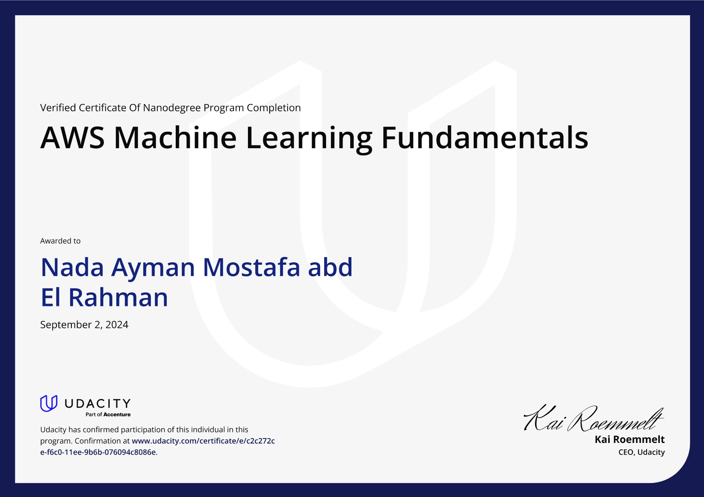
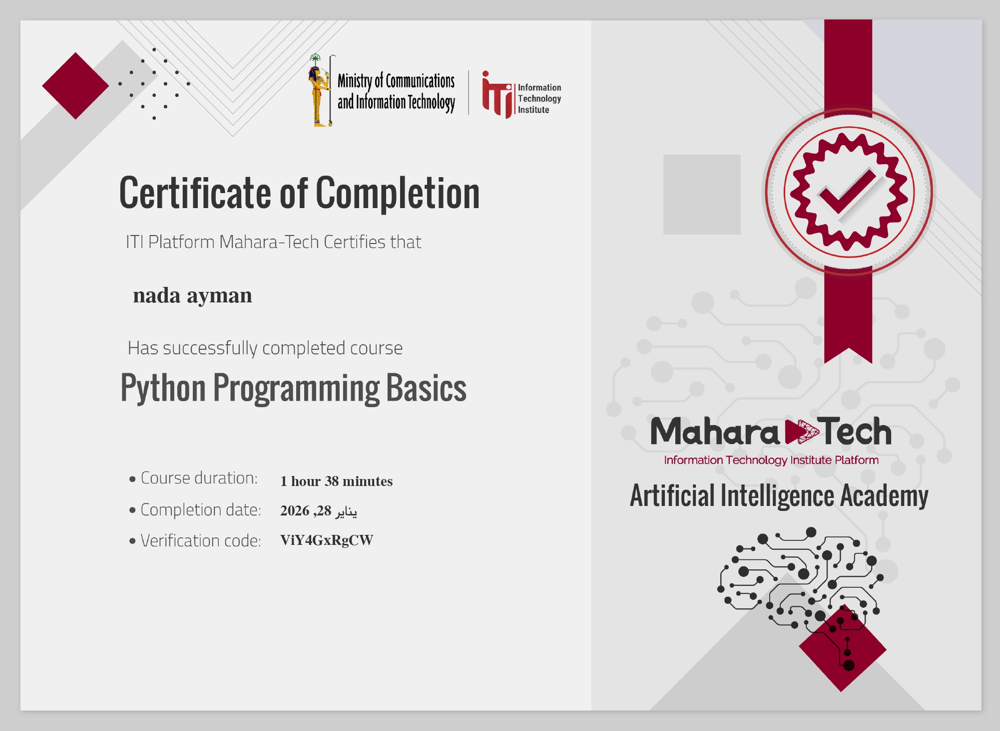
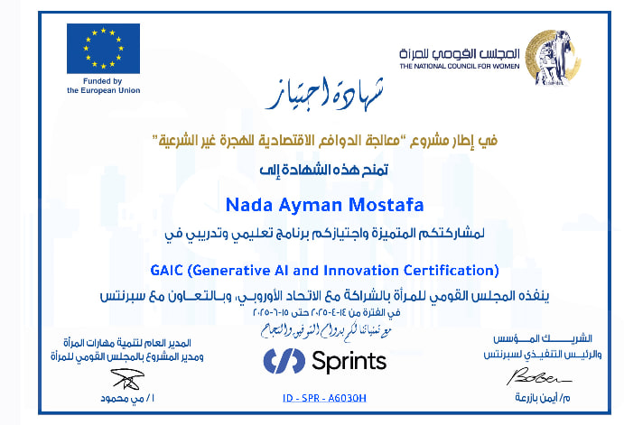
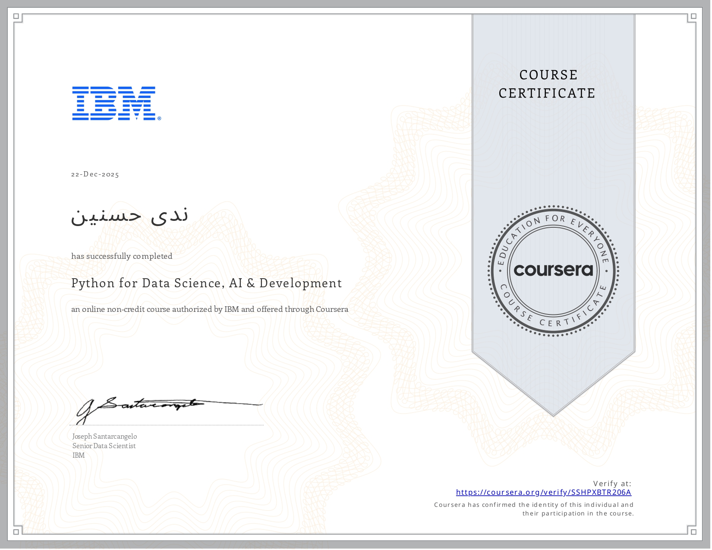
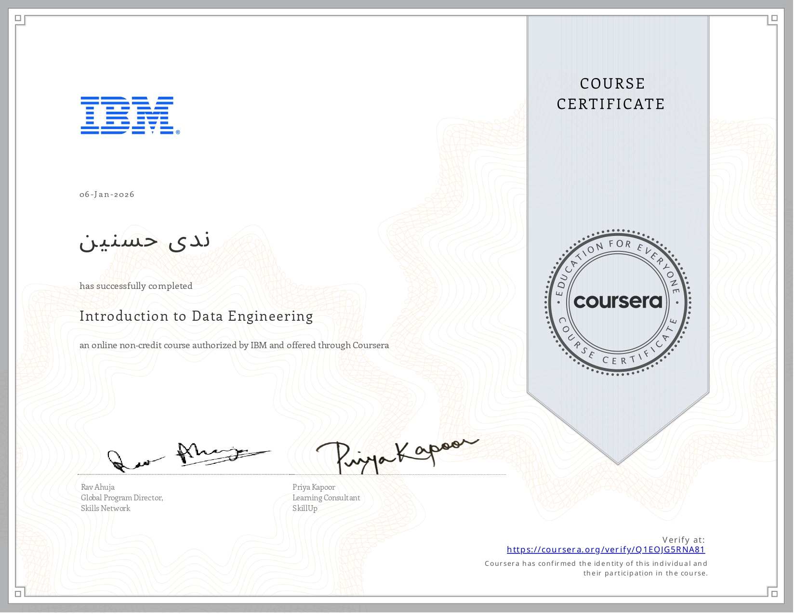
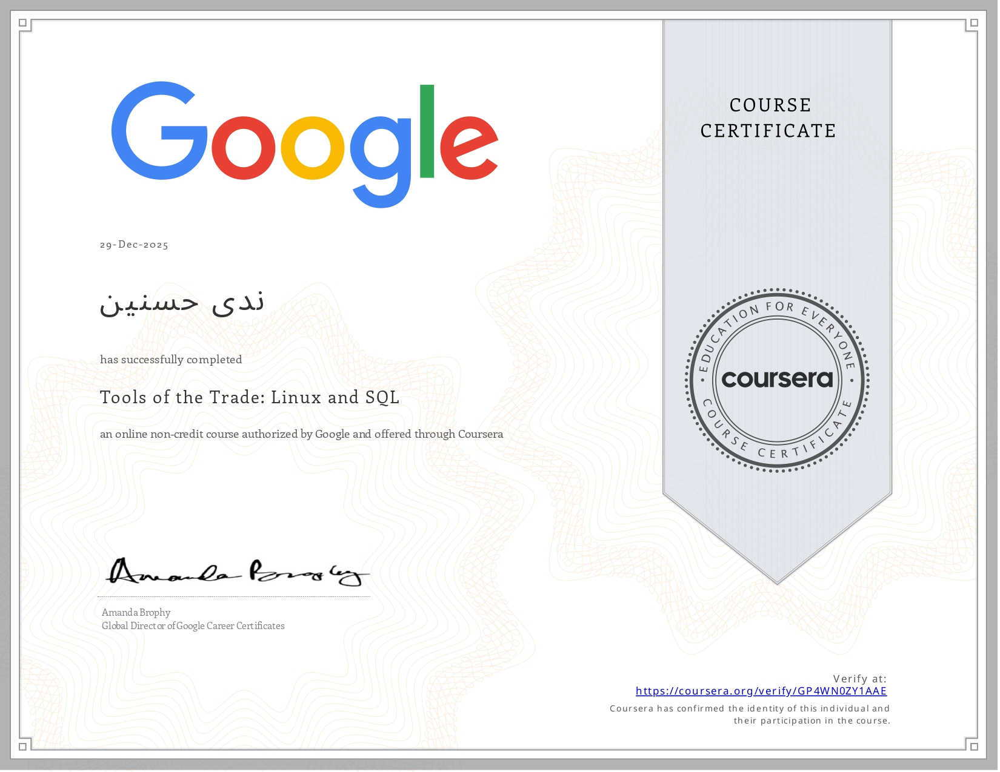
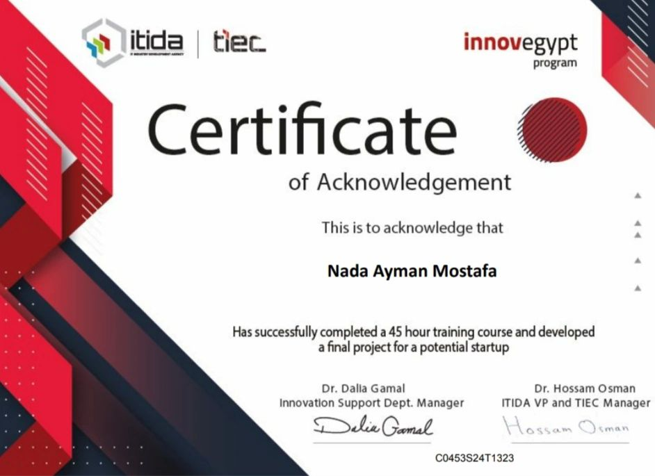

My Certifications

AI Programming With Python
Udacity - Scholarship

AWS Machine Learning Engineer
Udacity-Scholarship

Python Programming Basics
Mahara Tech

GAIC(Generative AI and innovation certification)
Sprints

Python for Data Science & AI Development
IBM

Introduction to Data Engineering
IBM

Google
Tools of Trade:Linux and SQL

Entrepreneurship program
Innovegypt program
HCIA_AI learning Course
HUAWEI